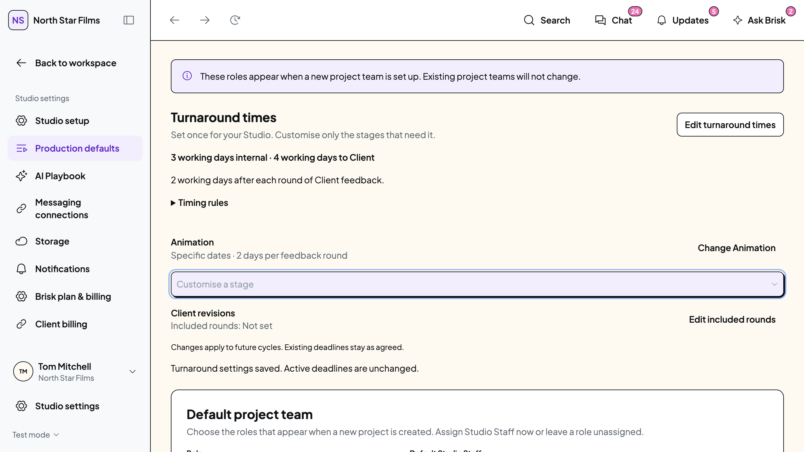
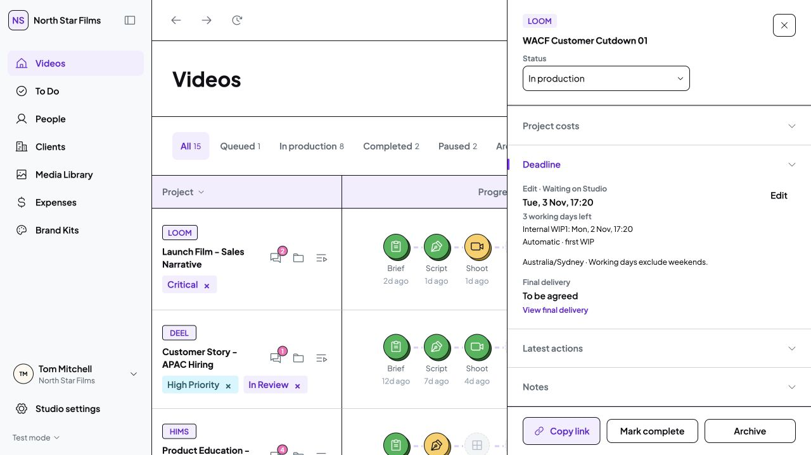
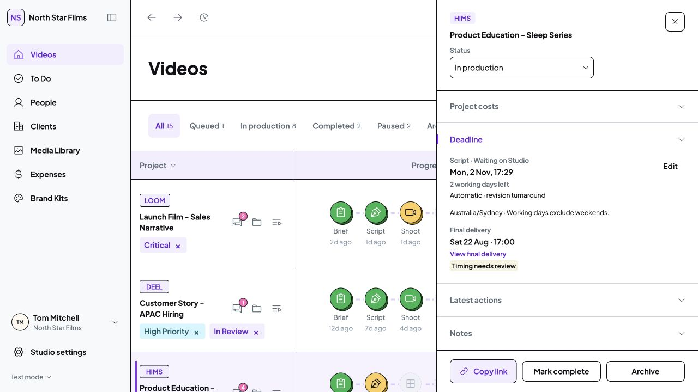
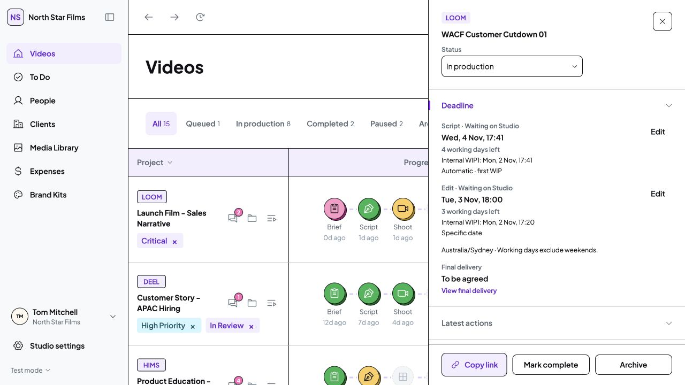
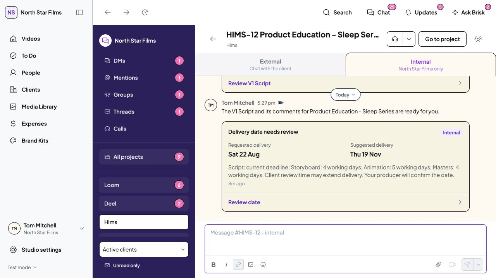
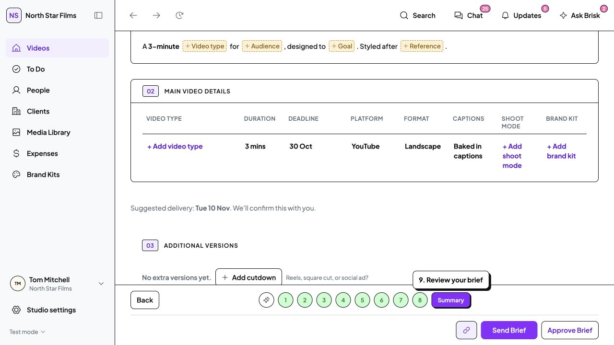

29-30 October 2026 · Actual prototype screenshots · Isolated demo data
Turnaround timers and stage deadlines
Shared Studio settings, automatic working-day timers and specific-date overrides are now connected to the approved timing warnings. Existing final delivery dates stay as agreed.
Set once for your Studio
Open Studio settings → Production defaults → Turnaround times. Edit the shared allowance once. Other stages inherit it; customise only genuine exceptions.
- Internal WIP1 and Client WIP1 use labelled working days. Client WIP1 includes internal review.
- Revision turnaround is a separate duration. Included revision rounds are a separate optional count.
- Edit/Animation length allowance applies to the first WIP only, with a 10-second buffer.
- Existing active deadlines do not change when defaults are saved.

Studio Staff · Production defaults. This isolated save example uses 3/4 working days and an Animation exception. Initial Studio allowances are 2/3/2 working days until explicitly changed.Named stages, automatic or specific dates
Timers begin when a stage becomes Waiting on Studio. Monday to Friday counts as working days, at the same local time in the Studio timezone. Client review ends that Studio cycle; the next return starts a fresh revision cycle.

WACF · Studio Staff · Existing untimestamped Edit explicitly started now. Internal and Client targets are separate; final delivery remains unset.
Hims · Studio Staff · Actual Studio review hand-off created the two-working-day revision deadline. Existing final delivery stayed unchanged.
Two active stages are listed independently. The Videos column shows the earliest deadline and +1 for the other stage.Existing active stages have no reliable historical start timestamp. Their saved dates are preserved; a producer can explicitly start a timer now or choose a specific date. No historical timer is invented.
The approved warning placement
Brief: one-line suggested delivery before submission. Project Chat: labelled requested and suggested dates, the reason, and Review date. Deadline column: Timing needs review links to the related message. Reading it does not resolve the timing issue.

Calculated remaining-stage allowances, with producer-only context. Client messages require producer review; final dates still require the existing agreement flow.
Brief draft only. No Brief was submitted. Dates are capture examples and will change with the current rules, duration and stage states.Verification and scope
Detailed checks and remaining limitations · Calculation evidence
TypeScript and runtime checks, plus isolated desktop interactions. No changes to the working browser’s records, mock records or assets. No dependencies, backend, tests, production build, commit or push.
Forecasts are provisional: filming/footage readiness and Client review time remain explicit assumptions. This front-end prototype recalculates while open; it does not send real notifications or run a server scheduler.
Implementation is ready for Tom’s review. Visual sign-off has not been assumed.